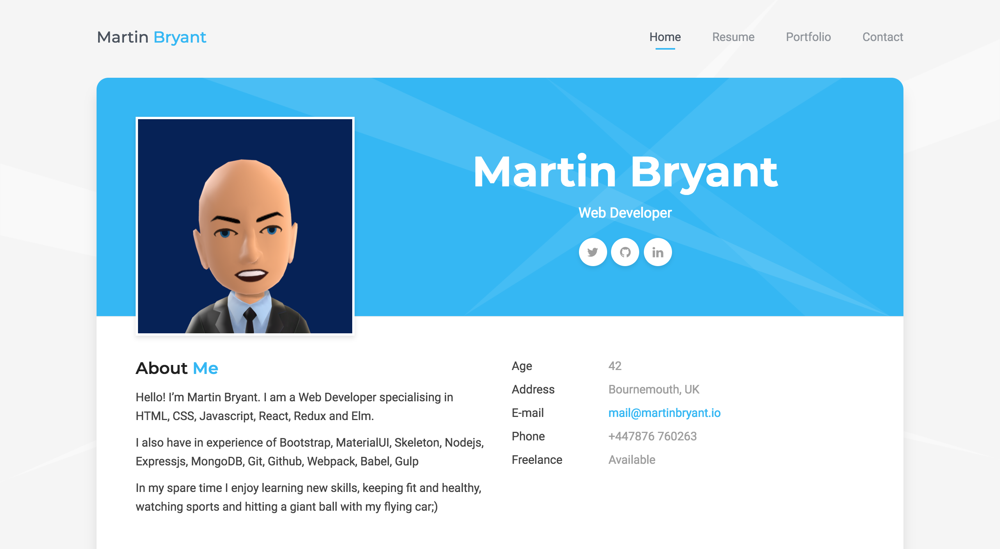
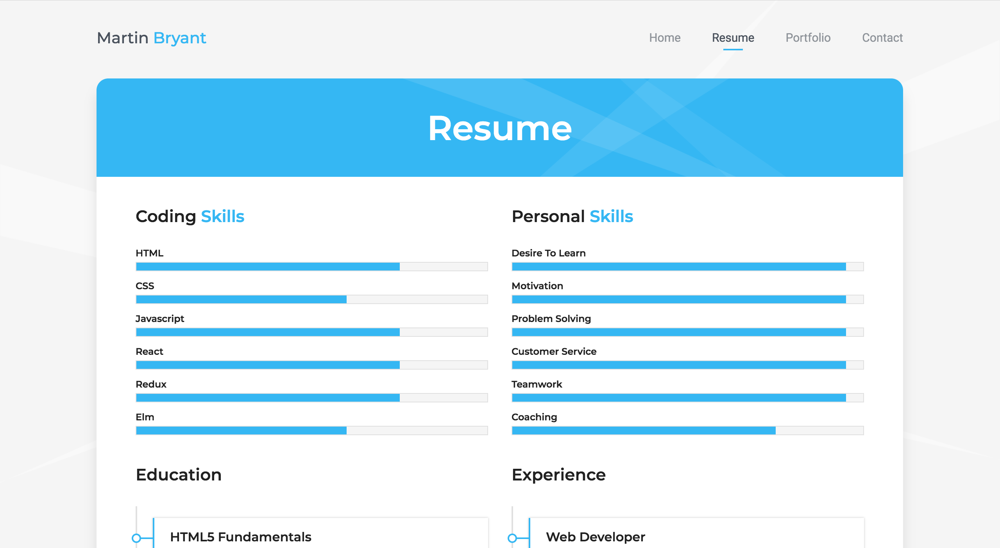
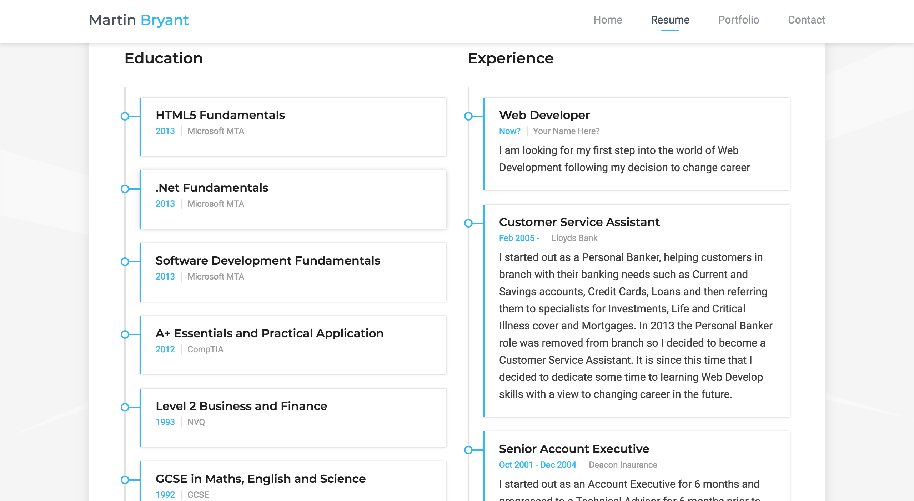
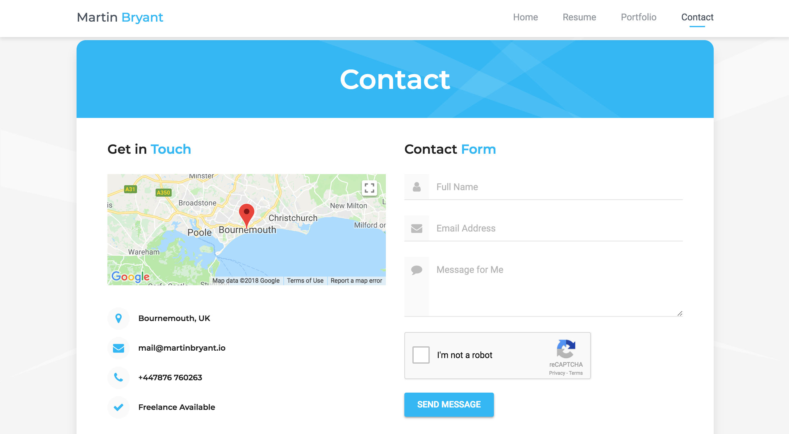
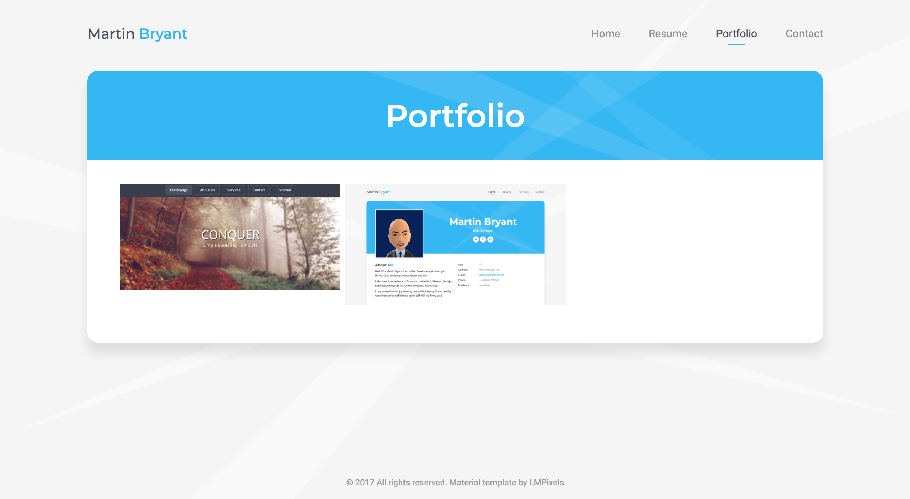

<div id="ajax-page" class="ajax-page-content">
    <div class="ajax-page-wrapper">
        <div class="ajax-page-nav">
            <div class="nav-item ajax-page-prev-next">
                <a class="ajax-page-load" href="portfolio-1.html">
                    <i class="zmdi zmdi-chevron-left"></i>
                    <a class="ajax-page-load" href="portfolio-3.html">
                        <i class="zmdi zmdi-chevron-right"></i>
                    </a>
                </a>
            </div>
            <div class="nav-item ajax-page-close-button">
                <a id="ajax-page-close-button" href="#">
                    <i class="zmdi zmdi-close"></i>
                </a>
            </div>
        </div>

        <div class="ajax-page-title">
            <h1>Portfolio Site</h1>
        </div>

        <div class="row">
            <div class="col-sm-7 col-md-7 portfolio-block">
                <div class="owl-carousel portfolio-page-carousel">
                    <div class="item">
                        
                    </div>
                    <div class="item">
                        
                    </div>
                    <div class="item">
                        
                    </div>
                    <div class="item">
                        
                    </div>
                    <div class="item">
                        
                    </div>
                </div>

                <!--
                <div class="portfolio-page-image">
                    
                </div>
                -->

                <script type="text/javascript">
                    jQuery(document).ready(function ($) {

                        $('.portfolio-page-carousel').owlCarousel({
                            smartSpeed: 1200,
                            items: 1,
                            loop: true,
                            dots: true,
                            nav: true,
                            navText: false,
                            margin: 10
                        });

                    });
                </script>
            </div>

            <div class="col-sm-5 col-md-5 portfolio-block">
                <!-- Project Description -->
                <ul class="project-general-info">
                    <li>
                        <p>
                            <i class="fa fa-globe"></i>
                            <a href="http://martinbryant.dev" target="_blank">http://martinbryant.dev</a>
                        </p>
                    </li>
                    <li>
                        <p>
                            <i class="fa fa-globe"></i>
                            <a href="http://lmpixels.com/demo/procard/#home" target="_blank">Original Vcard Design</a>
                        </p>
                    </li>
                    <li>
                        <p>
                            <i class="fa fa-calendar"></i> 02 March 2018
                        </p>
                    </li>
                </ul>
                <h3>Project Brief</h3>
                <p class="text-justify">Inspired by
                    <a href="https://medium.com/@GarrettLevine/5-projects-to-complete-when-starting-to-learn-front-end-web-development-48e8a1ce3178#3476"
                        target="_blank">5 Projects To Complete When Starting to Learn Front-End Web Development</a>
                </p>
                <p class="text-justify">The next step is to create a static, responsive, multi-page website. There are
                    many free templates available
                    online, but it can be difficult to find one you will be proud of after taking the time to build it.
                    At
                    this point, I would recommend spending a bit of money on a design. Remember, you are trying to
                    become
                    a web developer not a designer. Don’t expect to be able to learn both skills at once; there are many
                    developers who just aren’t designers and vice versa. The point is to focus on web development!</p>

                <h3>Challenges</h3>
                <ul>
                    <li>Removing the unwanted sections of the template</li>

                </ul>
                <h3>Takeaways</h3>
                <ul>
                    <li>Discovered an alternative way of structuring a page layout</li>
                </ul>
                <!-- /Project Description -->

                <!-- Technology -->
                <div class="tags-block">
                    <div class="block-title">
                        <h3>Technology</h3>
                    </div>
                    <ul class="tags">
                        <li>
                            <a>HTML</a>
                        </li>
                        <li>
                            <a>CSS</a>
                        </li>
                        <li>
                            <a>jQuery</a>
                        </li>
                    </ul>
                </div>
                <!-- /Technology -->


            </div>
        </div>
    </div>
</div>